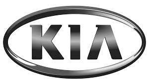

Története

A Kia Motors hivatalos álláspontja szerint a "Kia" egy betűszó, mely a sino-koreai ki (起, kijönni, előjönni) és a (亞, (Kelet-)Ázsiát jelöli) szavakra utal és szabad fordításban azt jelenti, hogy Kiemelkedni (Kelet-)Ázsiából.
A Kia 1944. december 11-én alapult csebolként, amikor Korea még a Japán Birodalom része volt, és acélcsöveket, valamint kerékpáralkatrészeket gyártott. 1951 elkezdett kész kerékpárokat gyártani, majd egy évvel később Kyungsung Precision Industryra módosította a nevét.[6] 1957-től attért kisméretű motorkerékpárok gyártására, Honda licenc alapján, majd 1962-től tehergépkocsikat a Mazda tervei alapján. 1973-ban megnyitotta első, kimondottan autógyártásra tervezett üzemét, Kvangmjong városában, mely a Sohari nevet kapta.[7] Itt 1974-től kezdve a Mazda Familia személyautó második generációján alapuló Kia Brisák készültek. Később a Fiat 132 és a Peugeot 604 tervei alapján épített modellekkel is kiegészült a kínálat. 1981-ben azonban a Kia kénytelen volt felhagyni a személyautók gyártásával és visszatérni a könnyű teherautókhoz, Cson Duhvan elnök ipari megerősödést célzó rendelkezései miatt
Botrányok
2012 végén az Amerikai Egyesült Államok Környezetvédelmi Ügynöksége kötelezte a Kiát, hogy ismerje el, hogy hibás üzemanyagfogyasztási adatokat közölt népszerűsítő kiadványaiban, továbbá a gyár kénytelen volt minden megjelentetett fogyasztási adatát 3%-kal megemelni és kártérítést fizetni a vásárlóinak.
A logó történetének kulcsfontosságú állomásai:
|
|
 |